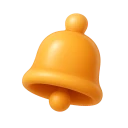
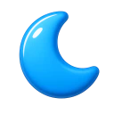
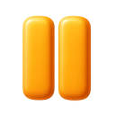

IEyes
A break you can actually follow
When a break is due, Vista dims every display and shows one instruction, a scene to follow and a ring that drains. This is the break screen, running in your browser. Press esc twice to skip it, like in the app.
Eye breaksEvery 20 min
Twenty seconds looking twenty feet away, with four guided ways to do it.
20-20-20 by default

Blink and posture nudgesOff by default
Quiet reminders between breaks, on the screen you're using, gone in seconds.
Turn on in Settings
Eye break
Look out the window
Find the furthest thing you can see and rest on it. Six metres or more lets the focusing muscle finally let go.
Find the furthest thing you can see
Pressesctwice to skip the break
Skipped. Your desktop is back.
IIBody
Two rhythms, two clocks
Your eyes want a short look into the distance, often. Your body wants to leave the chair, less often and for longer. Vista keeps them on separate timers, and keeps them apart.
Nothing lands within ten minutes of another break, and a move break of two minutes or more rests your eyes too, so you're never asked twice.
Change the timers and watch a morning plan itself.
Move breaksEvery 45 min
Out of the chair for a few minutes: a walk, a stretch or a glass of water.
2 to 10 minutes longTry one

Time away countsAutomatic
Step away from the keyboard and Vista counts it as a break, then says so.
Wasn't a break? Take it back.
IIISmart pause
Breaks that wait for a good moment
A break never lands in the middle of a call. Vista asks macOS which app is using the microphone or camera, so a muted meeting still counts as a meeting. It also waits through busy calendar events, a Focus, full-screen apps, video and the sentence you're typing.

Smart pauseAutomatic
Holds a break through calls, meetings, video, Focus and full-screen apps.
Lands when you're free
A minute's warningEvery break
A heads-up card a minute before each break, so nothing dims mid-sentence.
What Vista notices
IVWith your watch
With Apple Watch, a walk ends the break
Your Mac knows when you stop typing. Your watch knows when you start walking. Together they know when a move break really happened, and a break that's being held taps your wrist instead of lighting up your screen.
Your Mac and phone keep one schedule through your own iCloud.
Coming: the iPhone and Apple Watch apps follow the Mac release.
VMake it yours
Make it yours
Pick a style and a colour. The menu, the dashboard and the break screen follow along, and so does this page. Write your own break messages, choose the chimes, and show a countdown in the menu bar or just the icon.
InsightsOn your Mac
Streaks, your week at a glance and a Friday summary of how the breaks went.
A rhythm coach after two weeks
⌃⌥⌘B starts a break now⌃⌥⌘P pauses or resumes
VIPrivacy
No account. No server. Not even ours.
Your breaks, stats and settings live on your Mac. If you turn on sync, they travel through your own iCloud and nowhere else.
- The microphone stays closedVista never opens your mic or camera. It asks macOS which apps are using them, and that's all it learns.
- Times, never titlesWith your permission, Vista reads when your calendar says you're busy. It never reads what the event is called.
- Your iCloud, not oursSync between your Mac and phone goes through your private iCloud database, which we can't see. Read the privacy page